5.1.0
18 Oct 2021
MtoA 5.1.0 introduces Arnold 7.1.0.0 and is a major feature release bringing parallel preview renders on the CPU, multiple outputs for OSL and custom shaders, brand new imagers along with many other enhancements and bug fixes.
Installation
- Download the Arnold for Maya plugin
- Follow these installation instructions .
System Requirements
Maya 2020, 2022 or 2023
Windows 10 or later, with the Visual Studio 2019 redistributable.
Linux with at least glibc 2.17 and libstdc++ 4.8.5 (gcc 4.8.5). This is equivalent to RHEL/CentOS 7.
macOS 10.13 or later .
CPUs need to support the SSE4.1 instruction set. Apple Mac models with M series chips are supported under Rosetta 2 mode.
GPU rendering works on Windows and Linux only and requires an NVIDIA GPU of the Ampere, Turing, Volta, Pascal, or Maxwell architecture.
Optix™ denoiser requires an NVidia GPU with CUDA™ Compute Capability 5.0 and above.
We recommend using the 511.09 (Quadro), 511.09 (GeForce) , or higher on Windows and 495.46 or higher drivers on Linux . See Arnold GPU for more information.
The driver type must be set to DCH.
I n the driver page select "Windows Driver Type:" DCH
The cache will also need to be re-populated after installing a new Arnold version, updating to a new NVIDIA driver , or changing the hardware configuration of GPUs on the system. More information can be found here .
Maya Plugins Compatibility
MtoA 5.1.0 works with the following Maya plugins
- Bifrost Extension for Maya 2.3.1.0
- MayaUSD 0.16.0 (USD 21.11)
Enhancements
- Improved IPR interactivity: GPU and CPU interactivity is improved. ARNOLD-11981, ARNOLD-12007
- Stability improvements: We've improved the stability of Arnold, especially when using multiple render sessions.
- Per axis texture in triplanar: The triplanar shader can now optionally use different textures for each axis. ARNOLD-11708.
| 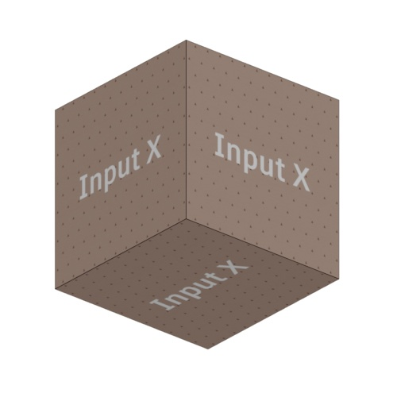 | 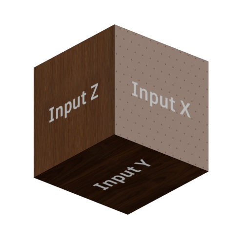 |
| input_per_axis: disabled (default) | input_per_axis: enabled |
A wide range of shading effects such as snow, dust, sand, and moss, can be achieved using input_per_axis (Y).
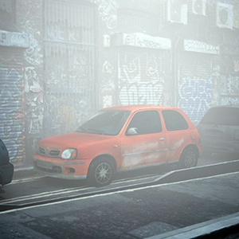 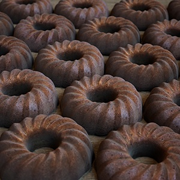
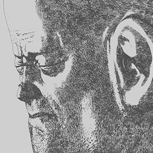 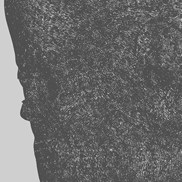 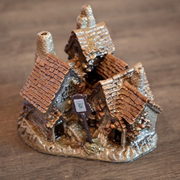
Rollover images to view with and without triplanar.input_per_axis (Y)
A video that shows how to use the input_per_axis can be found here .
- Flip_on_opposite_direction in triplanar: A new parameter called flip_on_opposite_direction can also be used to control the behavior of the shader on faces facing the corresponding negative axis. ARNOLD-11615.
| 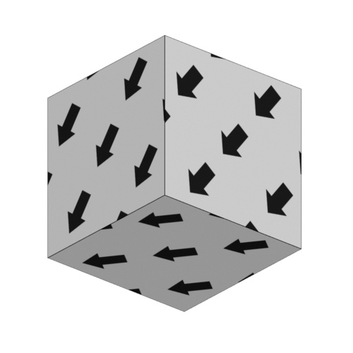 | |
| flip_on_opposite_direction: enabled (default) | flip_on_opposite_direction: disabled |
Reduced overhead of running Imagers in IPR: Imagers will no longer always run after every progressive pass or bucket update. This can give a substantial speedup with expensive to run imagers. ARNOLD-11760
Better startup and update times with atmosphere shader: Starting renders and updating parameters when using a high number of AA samples with a volume_scatter atmosphere shader should now be much faster. ARNOLD-5503
Render times of a simple scene with volume_scatter.samples=30:
| AA | AA_max | Arnold 7.0 | Arnold 7.1 |
| --- | --- | --- | --- |
| 4 | 50 | 5:28min (node update: 5:20min) | 8 sec (node update: 0 sec) |Case insensitive output image file extension:
AiFindDriverType()is now case insensitive, so asking, for instance, for a "png", "PNG", or "Png" will all return the png driver. This can be observed withkick -o, which will now work for different case types. ARNOLD-11934Updated MaterialX to 1.38.3: We now use MaterialX 1.38.3. Surface materials defined in a nodegraph are now supported. ARNOLD-10534, ARNOLD-11903
Updated Alembic to 1.8.3: The alembic procedural has been upgraded to use version 1.8.3 of the alembic library. ARNOLD-11973
Faster TextureResolveUseExistingTx: The
TextureResolveUseExistingTxstage is now much faster when many threads are trying to open textures for the first time with the use existing tx option enabled. On a 128-core machine we saw about an 8x speedup. ARNOLD-11689Faster per-pixel imagers: We removed overhead in imagers that can execute independently on each pixel. The exposure and tonemap imagers, for instance, are now significantly faster. This likely will be most noticed when interacting in IPR with small buckets. Note that bloom and denoising imagers require access to all pixels and so will not benefit from this optimization. ARNOLD-12011
Faster bloom imager: The bloom imager has been optimized. In one test we saw a 10% performance improvement. ARNOLD-11568
AOV denoising with the OptiX denoiser: Upgraded from the Optix 6 to Optix 7 denoiser. This newer denoiser supports denoising AOVs in a way that allows the denoised result to be compositable. Prevoius OptiX denoisers had no guarantees that the denoised results would combine correctly. ARNOLD-11726
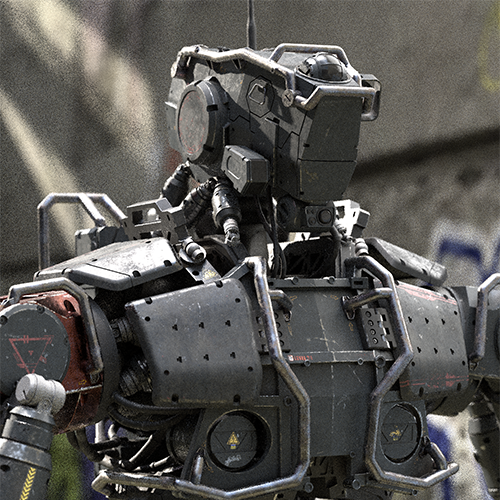 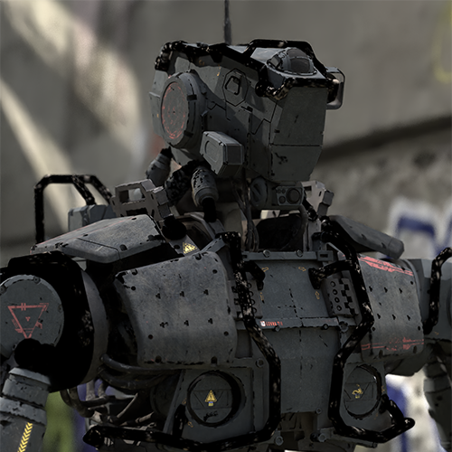 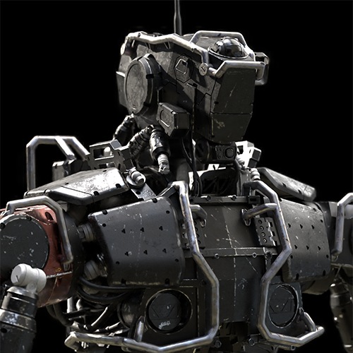 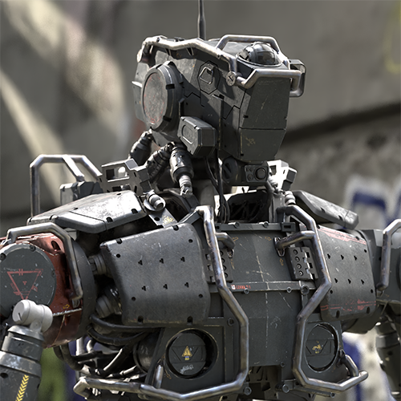 Original beauty Denoised beauty Denoised diffuse AOV Denoised specular AOV Denoised diffuse + denoised specular Upgraded OIIO to 2.4.0: This allowed for fixing several defects listed in the Bug Fixes section. ARNOLD-11651, ARNOLD-11785, ARNOLD-11790
Invert view and display transform for textures using OCIO: When using an explicit OCIO or the default color manager, it is possible to specify both a display and view transform when writing outputs, using the View ( Display ) syntax. It is now possible to use the same syntax for input color transforms as well. For example, reading a texture using the ACES 1.0 SDR-video ( sRGB ) color space will correctly invert a file with a view transform baked in. (ARNOLD-11961).
GPU Enhancements
- Improved GPU IPR interactivity: GPU IPR rendering is now more interactive. ARNOLD-11981
USD Enhancements
- Point Instancer improvements : Per-instance primvars and nested instancers are now handled both in the procedural usd#944 as well as the render delegate usd#482 .
- Mesh builtin normals : The procedural now reads the builtin USD description for mesh normals usd#962 usd#986
- Curves UVs : The procedural now supports UVs on curves, for per-strand primvars usd#975
- Light-linking : ignoreRoots wasn't supported correctly for light / shadow links in the procedural usd#987
- Shadow parameters : The procedural now reads shadow parameters (enable, color) from USD lights usd#945
- Shader connections to array attributes : The render delegate now supports rendering shader connection to an array attribute. This is needed e.g. to have shader connections on ramps usd#970
- Render tags : Render tags are now taken into account by the render delegate usd#883
- Procedural search path : USD is now properly considering the options procedural_search_path when loading nested procedurals #usd942
- Motion blur with UsdSkel : the procedural now extends the interval used to bake the skinning, so that it includes surrounding integer frames usd#951
Maya USD Export
With a version of MayaUSD 0.15 or higher, an export option called Plug-in Configuration is available. Switching this option to Arnold will let mayaUSD export all of the necessary Arnold data on top of MayaUSD exports. It will then be possible to render the scene in standalone by running kick scene.usd. Also, loading this file with mayausd as a proxy shape or through an aiStandIn will allow to render it on top of another scene.
Known limitations:
Importing such a usd file to maya won't import all the arnold data back to Maya
In order to kick the export usd file, it is necessary to create a camera so that MayaUSD exports it. The default "persp" camera will be ignored by mayaUSD.
Note that if you don't see the "Arnold" in the "Plug-in Configuration" list, it means that you don't have a version of MtoA that is compatible with the installed version of MayaUSD.
Incompatible Changes
The Maya Triplanar projection now matches the viewport, this will break the look of old scenes (MTOA-813)
Legacy sky shaders as background will fail to load correctly in existing scenes, as they're no longer represented as DAG nodes (MTOA-951)
Maya's Light Editor replaces the previous Arnold Light Manager (MTOA-883)
aiVolume parameters motionStart / motionEnd are no longer needed since the proper range is considered by Arnold (MTOA-987)
Warnings about deprecated API usage enabled by default: Warnings about deprecated API usage are controlled by the AI_ENABLE_DEPRECATION_WARNINGS macro, which is now set to 1 by default. This will help you find any use of old Arnold API that might be causing issues. If you still need to disable them for some specific part of your code, they can be disabled by setting AI_ENABLE_DEPRECATION_WARNINGS to 0. (ARNOLD-11751).
Changes in node_initialize/node_update : Those functions now receive a new parameter for the render session where the node is being rendered. This render session can be used for any API call requiring it to be specified. (ARNOLD-11817)
Changes in logging API : Logging functions have been modified so that log messages are associated with a universe instead of a render session. This means the
AiMsgSetLogFileFlags,AiMsgSetConsoleFlags,AiMsgGetLogFileFlagsandAiMsgGetConsoleFlagsAPI functions will now require a universe pointer instead of a render session pointer. Also, the log callback will receive a universe pointer parameter (called "universe") instead of a render session pointer. (ARNOLD-11983)Autodesk Network Licensing version : Arnold 7.1 switches to
ARNOL_2023licensing.- Single-user subscriptions will work with Arnold 7.1. The plugin installers automatically register the new version. If you do not use a plugin, then after you download Arnold, open the Arnold License Manager and click Register .
- Existing network licenses will not work with Arnold 7.1. Log on to your Autodesk account to generate your new
ARNOL_2023licenses.
Bug Fixes
MTOA-942 - Overscan not exported to Arnold
MTOA-585 - Output Denoising AOVs should output denoise_albedo
MTOA-328 - Disable "append" option on exr if not tiled
MTOA-813 - Maya triplanar texture projection doesn't match Maya viewport

MTOA-951 - Sky shaders no longer rendering as background
MTOA-983 - MtoA logging to console is generating too many duplicates
MTOA-987 - Fix motion range for aiVolume nodes
- ARNOLD-11958 - Color correct shader produces incorrect values with small gamma values
- ARNOLD-11852 - Memory leak with imagers when rendering multiple frames
- ARNOLD-11835 - Full frame imagers crash with negative render region
- ARNOLD-11827 - Intel Alder Lake CPUs did not always use high performance cores in Windows
- ARNOLD-11795 - Spotlight penumbra should affect the specular intensity
- ARNOLD-11667 - GPU and CPU+FIS filtering generated sampling patterns that could alias
- ARNOLD-11242 - 'n' key was no longer toggling AI denoisers in kick IPR
- ARNOLD-10400 - Volume motion blur advection computation was incorrect
- ARNOLD-10391 - Volume motion blur used incorrect motion/shutter intervals
- ARNOLD-11889 - Maketx --monochrome-detect should generate Y not R image for exr formats
- ARNOLD-11968 - AiUniverseGetRenderSession returns invalid pointer instead of null if the session was previously destroyed
- ARNOLD-11982 - Texture invalidation in Linux and macOS occurred even when texture was not modified
- ARNOLD-12055 - [GPU] Crash switching from CPU to GPU with optix denoiser
- ARNOLD-10577 - [GPU] Textured skydome_light leaks memory over multiple frames in a session